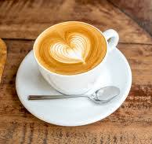
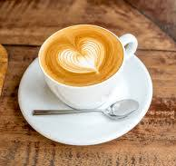

Deoarece cafeaua are un conţinut ridicat de antioxidanţi - fenol, substanţe volatile - daca este consumată în cantităţi moderate, poate avea efecte benefice asupra sănătăţii. Un studiu făcut în 2013 arată că numai 9% din orășeni nu consumă cafea - sub o anumită formă cunoscută: cafea solubilă, espesso, cappuccino, late etc.
 
